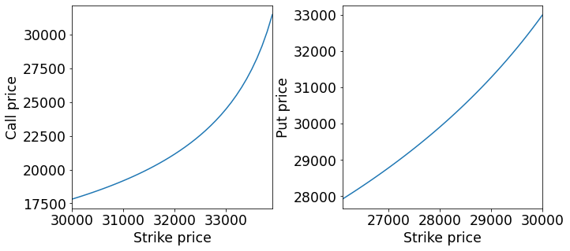

Option pricing under power laws¶
Karamata point¶
The Karamata point \(l\) of a power law survival function \(L(x)x^{-\alpha}\) is the point beyond which the strong Pareto law holds i.e. \(L(x) = \text{constant}, x > l\).
Option basics¶
Strike price \(K\): price at which one can buy/sell call/put upon exercising the option, respectively.
Underlying price \(S\): price of the underlying asset, for example a stock.
Contract price \(C(K)\): price of a call as a function of the strike price \(K\).
Contract price \(P(K)\): price of a put as a function of the strike price \(K\).
Call option case¶
Consider a European call option with strike price \(K\). Assume that the underlying asset’s price \(S\) follows some probability measure \(P\), then \(\mathbb{E}_p[S - K] = \int_K^\infty (S - K) dP \; (1)\).
Assume the underlying asset price \(S\) has a power law survival function. Assuming the option’s strike price \(K > l\) i.e. lies beyond the Karamata point and a strong Pareto law holds, then substituting the survival function into equation (1) gives
\(C(K) = \frac{K^{1-\alpha}l^{\alpha}}{\alpha - 1}, K \gt l \; (2)\)
Let us say that \(\alpha\) is from fitting data or from experience. Now what we need is a value for \(l\).
Consider a reference “tail” option with contract price \(C_1\) and strike price \(K_1\). Substituting into equation (2) and re-arranging for \(l\) gives
\(l = \big(\frac{(\alpha - 1)C_1}{K_1^{1-\alpha}}\big)^{1/\alpha}\).
Separately, we can get a relative pricing mechanism using the “tail” option strike price \(K_1\) in
\(C(K_2) = C_1\big(\frac{K_1}{K_2}\big)^{1-\alpha}, K_2, K_1 \gt l\)
Now, instead of the underlying asset price \(S\), consider the geomtric return \(r = \frac{S - S_0}{S}\), where \(S_0\) is the initial price of the underlying asset, hence \(S = (1 + r)S_0\). \(r\) follows a power law survival function \(r(K)\) with Karamata point \(r_l\):
\(r(K) = \big(\frac{K - S_0}{r_l S_0}\big)^{-\alpha}, K \gt S_0(1 + r_l)\),
allowing to obtain the relative pricing mechanism
\(C(K_2) = C_1\big(\frac{K_1 - S_0}{K_2 - S_0}\big)^{1-\alpha}, K_2, K_1 \gt S_0(1 + r_l)\).
Put option case¶
We do similar things for put options with, but \(S = (1 - r)S_0\) and \(r \gt r_l > 0\) where \(r\) is Pareto distributed in the positive domain and \(r_l\) is the Karamata point, giving
\(P(K_2) = P_1 \frac{\beta((\alpha - 1)K_2 + S_0) - (K_2 - S_0)^{1 - \alpha}}{\beta((\alpha - 1)K_1 + S_0) - (K_1 - S_0)^{1 - \alpha}}\),
where \(\beta = -1^{1-\alpha}S_0^{-\alpha}\).
import matplotlib.pyplot as plt
import matplotlib.pylab as pylab
import numpy as np
import pandas as pd
import scipy
from mpl_toolkits.mplot3d import Axes3D
params = {
"legend.fontsize" : "xx-large",
"axes.labelsize" : "xx-large",
"axes.titlesize" : "xx-large",
"xtick.labelsize" : "xx-large",
"ytick.labelsize" : "xx-large"
}
pylab.rcParams.update(params)
def call_price(
K2,
K1,
S0,
C1,
a
):
return C1 * ( (K2 - S0) / (K1 - S0) ) ** (1 - a)
def put_price(
K2,
K1,
S0,
P1,
a
):
A = ( S0 ** -a * ( (a - 1) * K2 + S0 ) - (K2 - S0) ** (1 - a) )
# ------------------------------------------------------------
B = ( S0 ** -a * ( (a - 1) * K1 + S0 ) - (K1 - S0) ** (1 - a) )
return P1 * A / B
Calibrating \(\alpha\)¶
We should make log-log plots of the survival function of the price of underlying asset \(S(x)\) to see whether it follows a power law. If it does, we can calibrate the \(\alpha\) for use in the option pricing formulae. We will do the calibration in the function check_power_law by plotting power laws with \(\alpha = 2,\ 3,\ 4,\ 5\) and eyeballing where \(S(x)\) falls.
Bitcoin prices¶
We choose to calibrate the \(\alpha\) for bitcoin prices as price data for bitcoin are readily available. The data are manually retrieved online and then saved in a .csv file. The name of the file including the extension must be inputted into the function check_power_law.
def check_power_law(
filename,
write=False
):
data = pd.read_csv(filename, header=None)
bins = 100
data_hist = np.histogram(data, bins=bins)
data_cdf = np.cumsum( data_hist[0] ) / data.size
data_bin_centres = [ 0.5 * (data_hist[1][i] + data_hist[1][i+1] ) for i in range(bins) ]
# note: scipy.stats.pareto.sf(b=b) is alpha=b+1
# see https://docs.scipy.org/doc/scipy/reference/generated/scipy.stats.pareto.html
Fbar_pareto_2 = scipy.stats.pareto.sf(data_bin_centres, b=1)
Fbar_pareto_3 = scipy.stats.pareto.sf(data_bin_centres, b=2)
Fbar_pareto_4 = scipy.stats.pareto.sf(data_bin_centres, b=3)
Fbar_pareto_5 = scipy.stats.pareto.sf(data_bin_centres, b=4)
if write:
with open("survival-function.csv", 'w') as fp:
fp.write("data,sf\n")
[ fp.write(str(data) + "," + str(sf) + "\n") for data, sf in zip(data_bin_centres, data_cdf) ]
plt.scatter(data_bin_centres, 1 - data_cdf, label="data")
plt.scatter(data_bin_centres, Fbar_pareto_2, label=r"$\alpha = 2$")
plt.scatter(data_bin_centres, Fbar_pareto_3, label=r"$\alpha = 3$")
plt.scatter(data_bin_centres, Fbar_pareto_4, label=r"$\alpha = 4$")
plt.scatter(data_bin_centres, Fbar_pareto_5, label=r"$\alpha = 5$")
plt.legend()
plt.xscale("log")
plt.yscale("log")
check_power_law("BTC-USD.csv", write=True)
---------------------------------------------------------------------------
AttributeError Traceback (most recent call last)
~\AppData\Local\Temp/ipykernel_8064/1938047345.py in <module>
33 plt.yscale("log")
34
---> 35 check_power_law("BTC-USD.csv", write=True)
~\AppData\Local\Temp/ipykernel_8064/1938047345.py in check_power_law(filename, write)
14 # note: scipy.stats.pareto.sf(b=b) is alpha=b+1
15 # see https://docs.scipy.org/doc/scipy/reference/generated/scipy.stats.pareto.html
---> 16 Fbar_pareto_2 = scipy.stats.pareto.sf(data_bin_centres, b=1)
17 Fbar_pareto_3 = scipy.stats.pareto.sf(data_bin_centres, b=2)
18 Fbar_pareto_4 = scipy.stats.pareto.sf(data_bin_centres, b=3)
AttributeError: module 'scipy' has no attribute 'stats'
Pricing bitcoin options¶
We are not sure if the survival function of the price data has been correctly obtained and hence if the log-log plots of the survival function are correct. Nonetheless, we calibrate an \(\alpha\) using the plot as an exercise.
The plot shows gaps of 1 in the \(\alpha\) of the Pareto distributions, so calibrate the \(\alpha\) of bitcoin to be around \(1.3\). The function price_options uses this \(\alpha\) to price theoretical bitcoin options.
def price_options():
# from calibration
a = 1.3
# price of BTC as of 2021/12/29 ( happy new year :) )
S0 = 34587.55
# for calls
K1_c = 34000 # strike price of "tail" call option
C1_c = 33000 # contract price of tail call option
K2_c = [ K2 for K2 in range(30000, K1_c, 100) ]
C = [call_price(K2, K1_c, S0, C1_c, a) for K2 in K2_c]
# for puts
K1_p = 30000 # strike price of "tail" put option
P1_p = 33000 # contract price of tail put option
K2_p = [ K2 for K2 in range(K1_p, 26000, -100) ]
P = [put_price(K2, K1_p, S0, P1_p, a) for K2 in K2_p]
# plots
fig, axs = plt.subplots(ncols=2, figsize=(10, 5))
fig.tight_layout(pad=3.5)
xlim_c = ( np.min(K2_c), np.max(K2_c) )
xlim_p = ( np.min(K2_p), np.max(K2_p) )
axs[0].plot(K2_c, C)
axs[1].plot(K2_p, P)
plt.setp(axs[0], xlabel="Strike price", ylabel="Call price", xlim=xlim_c)
plt.setp(axs[1], xlabel="Strike price", ylabel="Put price", xlim=xlim_p)
price_options()
